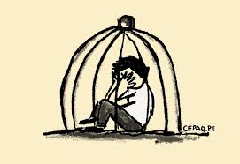

Consecuencias del Bullying
Las consecuencias del bullying son devastadoras y afectan tanto a las víctimas como a los agresores. Este tipo de acoso no solo deja huellas físicas, sino que también tiene un impacto emocional y psicológico profundo en todos los involucrados.
Consecuencias para la víctima:
- Baja autoestima: Las víctimas de bullying suelen sentirse inferiores y menos valiosas, lo que afecta su confianza y bienestar emocional.
- Ansiedad y depresión: Las víctimas pueden experimentar altos niveles de ansiedad, depresión e incluso pensamientos suicidas debido al sufrimiento psicológico.
- Aislamiento social: El bullying a menudo lleva a la víctima a aislarse de sus compañeros, amigos y familiares.
- Problemas académicos: El estrés y la angustia derivados del acoso afectan el rendimiento académico de la víctima.
Consecuencias para el agresor:
- Comportamiento agresivo: Los agresores pueden desarrollar una actitud más violenta, lo que puede llevar a futuros problemas legales o laborales.
- Problemas emocionales: El agresor puede experimentar problemas de salud mental, como depresión, baja autoestima o trastornos de conducta.
- Aislamiento social: Los agresores a menudo son rechazados por sus compañeros y pueden enfrentar consecuencias sociales a largo plazo.
Para más información sobre las consecuencias del bullying, puedes revisar este artículo de la UNICEF.
